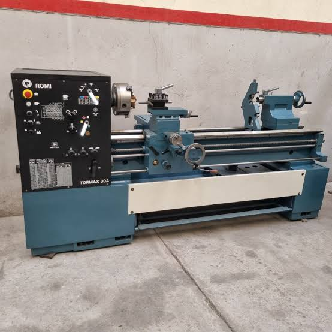

Preparar a experiência
TC-04Abra no Chrome do Celular, permita a câmera e aponte para a imagem target impressa ou exibida em outra tela.
Configure a API para consultar dados de monitoramento.
Temperatura, vibração, status e manutenção são didáticos. Não representam limites ou recomendações oficiais do ROMI TORMAX 30A.
Imagem de reconhecimento

Abrir target para imprimir ou exibir ↗
O reconhecimento usa esta foto completa, e não qualquer torno semelhante.
Quatro regiões interativas
01 · Cabeçote
Identificação e função da placa.
02 · Carro
Movimento da ferramenta e monitoramento.
03 · Contraponto
Apoio e alinhamento da peça.
04 · Área de proteção
Orientações gerais e manutenção via API.